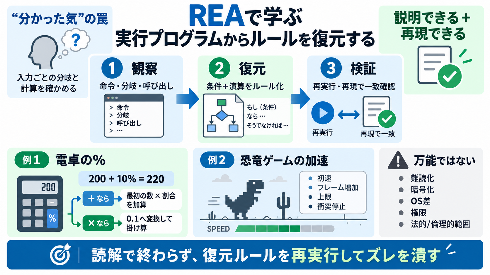

Decompiling and repacking Electron Apps
C:\Users\cristian\AppData\Local\Programs\OP.GG\resources In this directory lies an .asar file. Normally it’s named app.a…

REA（Reverse Engineer Anything）は、実行中の命令・分岐・呼び出しを読み取り、「なぜその結果になるのか」を説明し、必要なら再構築まで進めます。
リバースエンジニアリングは、読んだ気で終わるとズレます。鍵は「入力ごとに、どの分岐が選ばれ、どの値にどの演算が適用されるか」を復元して検証することです。
プログラムの内部は、条件分岐ごとに台本が分かれています。REAはその台本を追跡し、「どの入力で、どの役（計算ルール）が呼ばれるか」を復元します（復元：replicate / 日本語：ふくげん）。
REAはコマンドでエージェント連携を準備し、承認ステップを経て解析を進めます。単なる静的な眺めではなく、説明と再構築を短い往復で回す設計です。
Windows電卓の例では、%キーは「+の場合に最初の数の割合」を計算して加算します。つまり200の10%（20）を作り、200 + 20 = 220 になります。
REAの例では、% handlerが演算子を判定して計算方法を切り替えます。+なら「割合を加える」方向、×なら「0.1へ変換して掛ける」方向へ分岐します。
恐竜ゲームの加速例では、加速ロジックを「初速」「毎フレームの増加」「上限」「衝突時の停止」などに分解します。分解により、再実装・検証可能な単位に落とし込めます。
REAの中心動作は「対象が実行している命令や関数呼び出し、分岐を読み取り→説明する→必要なら同じルールを再現する」です。説明は根拠を伴うため、手戻りが起きた箇所を絞れます。
入力データの強調点は、リバースエンジニアリングが単なる読解ではなく、改修やミニ実装まで到達するプロセスだということです。電卓やゲームの例は、理解→動作一致までを短く往復する型を示します。
復元は正解とは限りません。入力データでも再現ゲームの動作検証が示唆されており、復元後に再実行して結果一致を確認する運用が重要です。
解析対象は何でもできるわけではありません。難読化・暗号化・反解析対策、OS/バージョン差、そしてライセンスや利用条件などの制約が結果に影響します。
REAは、実行プログラムから分岐と計算ルールを復元し、「説明できる」だけでなく「同じ挙動を再現できる」状態まで進めるためのアプローチです。
C:\Users\cristian\AppData\Local\Programs\OP.GG\resources In this directory lies an .asar file. Normally it’s named app.a…
``` Nice. We have all the artifacts and source code of the Electron app. Let’s quickly extract all the API artifacts we…
## Prerequisites Before we dive into the decompilation process, ensure that you have Node.js and npm installed on your …
[18:19] index different file formats and one of the those components is uh called IPS plug-in. and which is loaded from …
### Transcript [0:00] so in this video we're going to learn how to do some simple reverse engineering on Windows we're g…